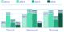
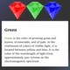

Chapter 17 Beyond the Visible: Metadata for Accessibility and Added Functionality
SVG on the web is more than just a picture. It’s a structured document that can contain structured information about what the graphic represents.
This chapter looks at the metadata elements and attributes available in SVG to make your graphic more accessible, or to annotate it with information that will be used by your own scripts or by other software.
Figures and Examples#
The file names link to the code view on GitHub. Beware: the linked screenshots are hi-resolution; some have very large file sizes.
View all files for this chapter on GitHub.
- Example 17-1. Labeling parts of a graphic with
<title>elements - Example 17-2. Improving accessibility of SVG titles with ARIA attributes
- Figure 17-1. An SVG bar chart, where the full meaning of each bar is generated from three different labels
- Example 17-3. Associating visible labels with graphics
- Figure 17-2. SVG title and description, displayed by cloning content into HTML elements
- Example 17-4. Associating visible labels with graphics
- Example 17-5. A sample SVG license and other metadata
-
The code in the book is a generic, anonymized example. For similar code in real graphic files, see the Open Clip Art Library samples from Chapter 4.
{kind=link}
{kind=link}
{kind=link}
{kind=link}
{kind=link}
{kind=link}
{kind=link}
{kind=link}
{kind=link}
{kind=link}
{kind=link}
{kind=link}
{kind=link}
{kind=link}
Online Extras#
- Reference: SVG Elements and Attributes